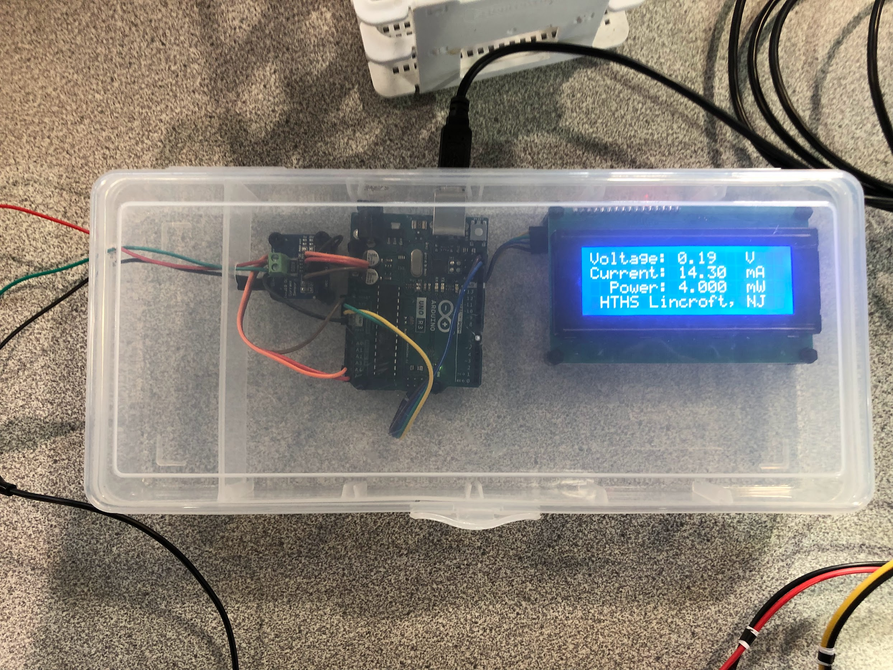
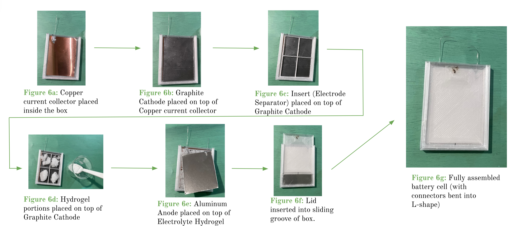
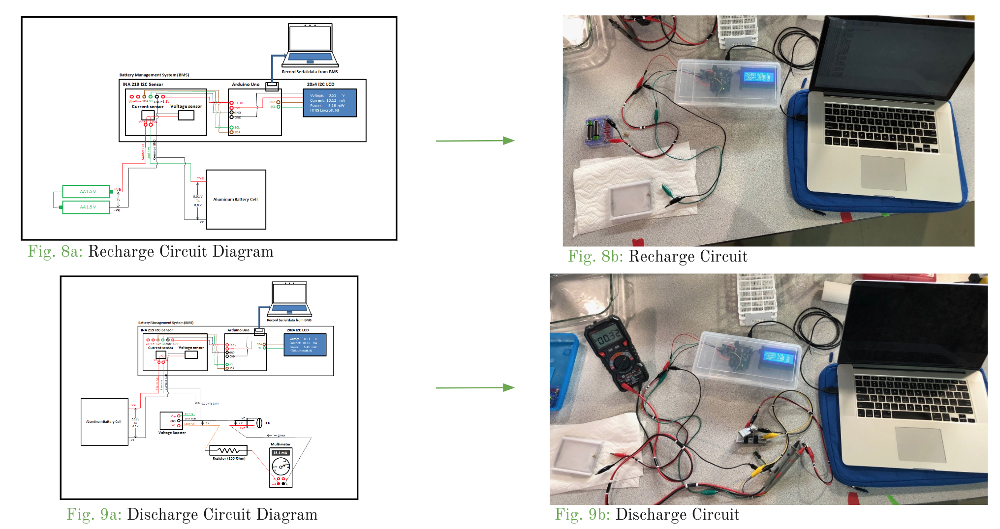
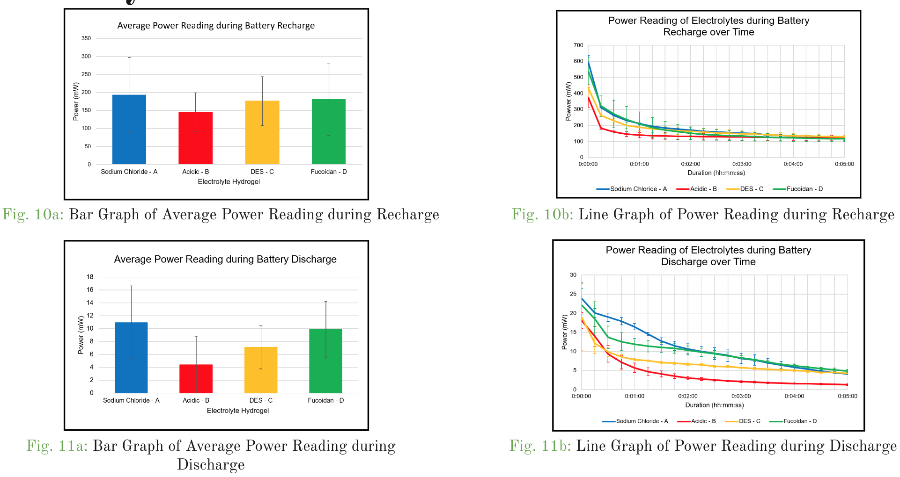

1 |
Assemble Battery Management System (BMS)
Three components of BMS: Sunfounder LCD, Arduino UNO, and INA219 sensor
Components were placed in a clear plastic box
Components' mounting points and openings for connections
to experimental circuits were marked with sharpie
Drill was used to make holes at marked locations
Standoffs and nylon screws used to secure components in place
|
 |
2 |
Construct Batteries
Copper current collector sheet placed inside of a 3D-printed box, with soldered tin wire protruding from drilled
holes in box
A graphite cathode sheet is placed on top of the copper current collector sheet
An electrode separator is placed on top of graphite cathode
Hydrogel electrolyte (Saltwater, acidic, deep-eutectic-solvent, or Fucoidan) is spread evenly across graphite cathode
Aluminum sheet is placed on the hydrogel
3D-printed lid is slotted into place, closing the battery
|
 |
3 |
Construct and Test w/ Experimental Circuits (Recharge and Discharge)
Two types of circuits were used for testing: Recharge and Discharge
Recharge circuit uses a pair of AA batteries to charge the experimental battery
Source side of recharge circuit is two AA alkaline batteries
Load side of the recharge circuit: Aluminum battery cell
Discharge circuit uses experimental battery to power an LED
Source side of the discharge circuit: Aluminum battery cell
Load side of the discharge circuit: Voltage Booster, Resistor, LED, and Multimeter
|
 |
4 |
Data Collection Using CoolTerm Software
The software CoolTerm was used to save the data from Arduino port into a text file.
The battery was reconfigured to the discharge circuit
Serial data from the BMS was collected for 5 minutes during discharge, and saved into the text file
Previous steps were repeated 2 more times for data collection
|
|
5 |
Statistical Analysis
Independent variable is electrolyte type; Dependent variables are voltage, current, and power readings
Three trials conducted for each electrolyte to gather raw data
Average power and current values used for the summative and statistical analysis.
Summative analysis involved calculation of measures of central tendency (mean, variance, and standard deviation)
Statistical analysis first involved a single-factor/one-way ANOVA test on power readings of all electrolytes
Two-tailed paired t-tests performed between experimental and each control electrolyte
|
 |